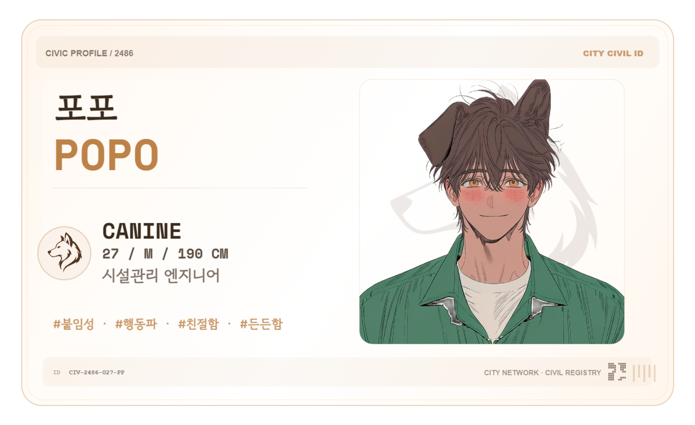
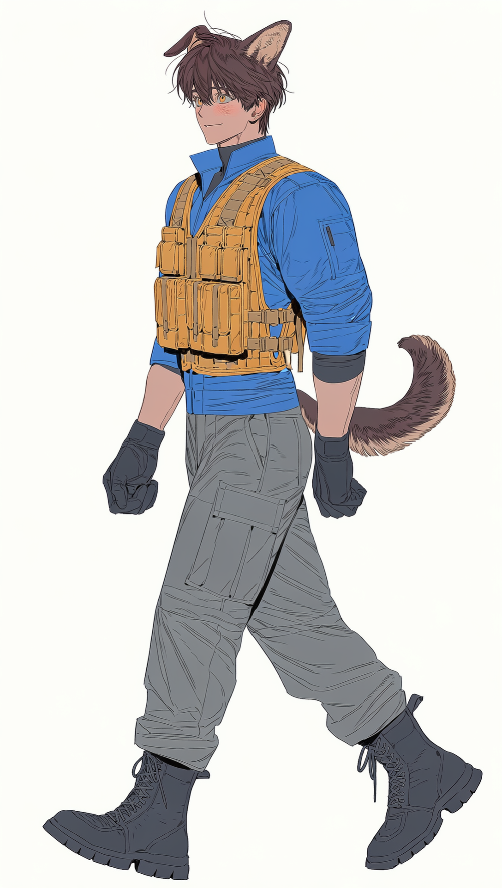

PERSONAL ACTIVITY & OBSERVATION RECORD
포포POPO
🐕 / CANINE
27 / M / 190 CM
시설관리 엔지니어
27 / M / 190 CM
시설관리 엔지니어

VISUAL RECORD / CURRENT
전신
FILE 01 / FULL BODY

CIVIC VISUAL REFERENCE · CURRENT FILE
OPEN PHOTO ARCHIVE →
SPECIESCANINE
AGE / SEX27 / M
HEIGHT190 CM
ASSIGNMENT시설관리 엔지니어
성격 / PERSONA
붙임성 좋음 · 솔직 · 행동파 · 친절
내면 기록
눈앞에 문제가 생기면 직접 손을 대 해결하려 하고, 자신이 실제로 도움이 되는 사람이라는 데서 만족을 얻는 편이다. 다만 상대가 도움을 필요로 하는지 확인하기 전에 먼저 움직이는 경우가 있어, 호의와 개입의 경계가 흐려질 때가 있다.
생활 습관
작은 공구들을 늘 들고 다니며, 손이 비면 하나쯤 만지작거리는 버릇이 있다.
본인은 거의 의식하지 못하는 듯.
볼트와 케이블 타이는 사실상 상비품처럼 휴대한다.
가방 안에서 안 나오는 날을 보기 어렵다.
긴 문자를 주고받기보다는 바로 전화를 거는 쪽을 선호한다.
세 줄쯤 넘어갈 것 같으면 그냥 거는 편.
친해질수록 어깨를 툭 치거나 등을 밀어주는 식의 무자각 접촉이 잦아진다.
지적하면 잠깐 조심하지만 오래가지는 않는다.
RELATION RECORD
기존 관계
🐈 미우
오래된 생활권 업무지인 · 티격거리지만 서로의 능력을 인정
RESTRICTED / PRIVATE BIOLOGICAL RECORD — 클릭하여 열람
신체개과 중간 발현 · 인간형 + 기저부 팽창성 조직 + 퇴화한 baculum계 지지조직
취향밀착·접촉 많음 · 체격차/힘차이를 활용한 플레이 · 직접적 애정표현 · 외설적인 언행
특징순한 평소 인상과 달리 관계 시 큰 체격과 힘을 적극적으로 사용함